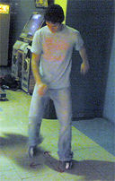
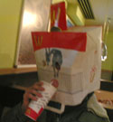

Baldosero
 De: La Frikipedia, la enciclopedia extremadamente seria.
De: La Frikipedia, la enciclopedia extremadamente seria.
Descripción
 Baldosero baldoseando en las baldosas al lado de una pump it up
 Baldosero reponiendose despues de un duro dia de baldoseo
Friki del Pump it up y/o DDR que quiere superarse a sí mismo y al campeón de España bailando cada día durante 7 horas en el suelo, ya que no tiene dinero para gastárselo en una alfombra de baile.
Suele usar las baldosas de su casa imaginándose que son las flechas del juego, pone el programa (si es que tiene) y delante de la pantalla empieza a bailar con las manos y brazos tensos moviendo poseidamente las piernas sin mover la parte de la cintura hacia arriba.
Metas
- Ir al Campeonato de Korea (aunque tenga q pagar 1.000 euros por ello).
- Dejarse las piernas en el intento.
- Pasarse chimera en nightmare.
- Hacer un tour por toda España para participar en todos los torneos regionales.
Consecuencias
- Problemas graves para llegar a fin de mes, ya que se gasta el dinero en jugar a la máquina, necesitando que sus amigos le hagan de banco.
- Pierde totalmente el sentido del ritmo.
- Su "Amiga del alma" llama continuamente a su madre diciéndole que es un ludópata.
- Se cansará y al año lo dejará.
Autor(es):
- Kenedhor
- DaSlayer
- Doctor grijander
- Frikiman
- Roms
- Idrox
- Diegocon13
- Law ripley
Frikipedia 2005-2016, Licencia
GFDL 1.2 - Extraído por FrikiLeaks